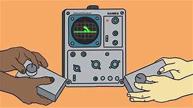
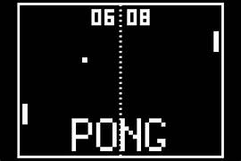
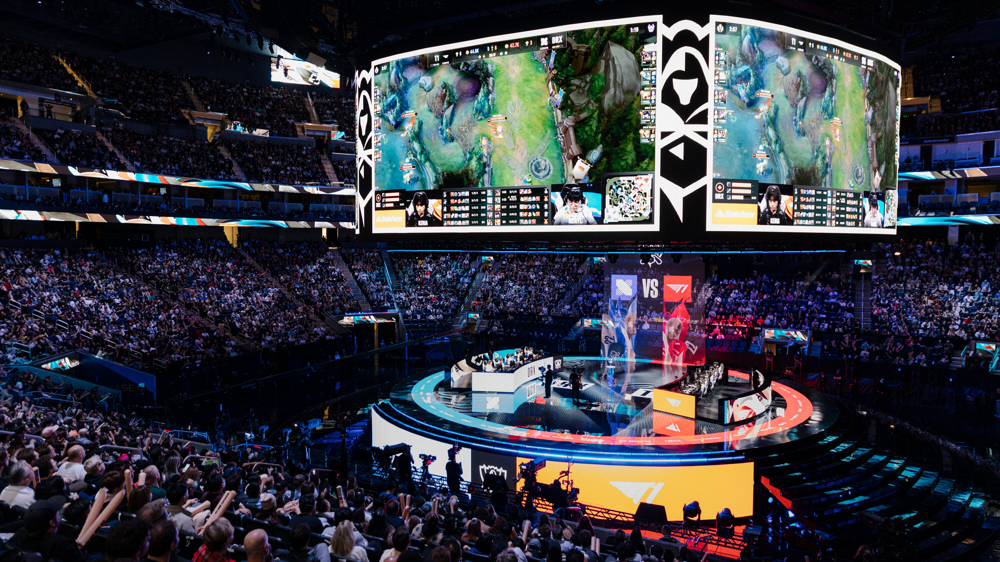
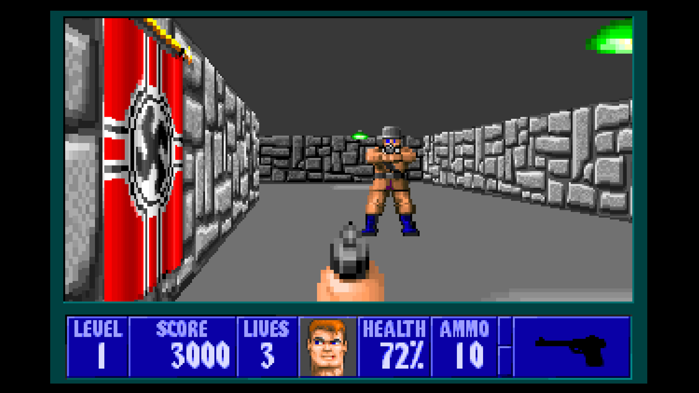
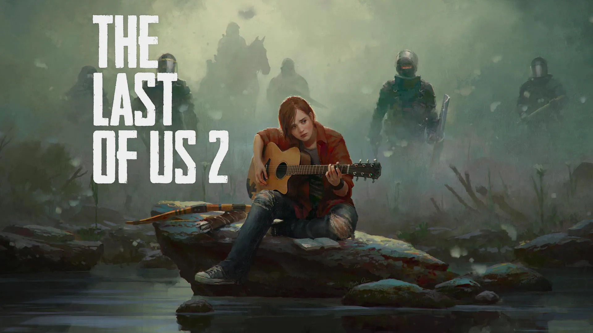

Awal Mula Game
Game pertama kali diciptakan pada tahun 1950-an, namun konsep permainan berbasis teknologi baru berkembang pada tahun 1958. Salah satu game pertama yang dapat dianggap sebagai cikal bakal game modern adalah Tennis for Two, yang diciptakan oleh William Higinbotham, seorang fisikawan asal Amerika Serikat, pada tahun 1958. Game ini dimainkan di layar osiloskop dan memiliki dua garis sebagai pemain serta bola yang bergerak di antaranya.
Tennis for Two (1958), karya William Higinbotham, sering dianggap sebagai game pertama yang memperkenalkan konsep dasar permainan video.
Namun, game yang lebih dikenal secara komersial dan menjadi ikon pertama dalam sejarah game adalah Pong, yang dirilis oleh Atari pada tahun 1972. Pong adalah simulasi tenis meja yang berhasil menarik perhatian publik dan menjadi permainan pertama yang dimainkan di mesin arcade.
Pong (1972) oleh Nolan Bushnell dan Atari, merupakan game arcade pertama yang sukses secara komersial.
Perkembangan Game
Era 1980-an: Masuknya Konsol dan Game Arkade
Pada tahun 1980-an, perkembangan game semakin pesat dengan munculnya game arkade ikonik seperti Space Invaders (1978), Pac-Man (1980), dan Donkey Kong (1981). Game-game ini menjadi sangat populer di kalangan masyarakat dan banyak dimainkan di mesin arcade di pusat perbelanjaan, restoran, dan tempat umum lainnya.
Pada saat yang sama, konsol permainan mulai mendapatkan popularitas. Nintendo Entertainment System (NES), yang dirilis pada tahun 1985, menjadi salah satu konsol paling sukses sepanjang masa. Game seperti Super Mario Bros. dan The Legend of Zelda menjadi landasan bagi perkembangan industri game di masa depan.
Era 1990-an: Revolusi 3D dan Era Konsol Baru
Di dekade 1990-an, game mulai bertransformasi dengan teknologi 3D. Pada tahun 1994, PlayStation milik Sony diluncurkan dan mengubah lanskap industri game selamanya. Gran Turismo, Final Fantasy VII, dan Metal Gear Solid adalah beberapa game yang memanfaatkan teknologi grafis canggih pada waktu itu dan membuat game PlayStation menjadi sangat digemari.
Era 90-an juga menyaksikan hadirnya franchise game yang masih populer hingga sekarang, seperti Pokémon (1996) yang pertama kali dirilis di Game Boy, serta game Resident Evil yang memperkenalkan genre survival horror kepada pemain.
Selain itu, muncul juga konsol baru seperti Microsoft's Xbox pada tahun 2001 yang menandai dimulainya persaingan ketat antara Sony, Microsoft, dan Nintendo dalam pasar konsol game.
Era Modern Game
2000-an: Game Open World dan Multiplayer
Masuk ke tahun 2000-an, industri game mulai mengadopsi konsep game open-world dan gameplay multiplayer yang lebih dalam. Game seperti Grand Theft Auto III (2001) membawa pengalaman bermain yang lebih luas dan memungkinkan pemain untuk menjelajah dunia terbuka tanpa batasan besar.
Pada tahun 2004, World of Warcraft (WoW) diluncurkan oleh Blizzard Entertainment. WoW memulai tren game MMORPG (Massively Multiplayer Online Role-Playing Game), yang mengizinkan pemain dari seluruh dunia untuk berinteraksi dan bermain bersama dalam dunia virtual yang besar.
2010-an: Game Mobile dan Streaming
Di tahun 2010-an, game mobile mulai mengambil alih pasar game global. Dengan kemajuan smartphone, game seperti Angry Birds (2009) dan Clash of Clans (2012) mencapai popularitas luar biasa di platform mobile. Ini membuka jalan bagi game casual yang bisa dimainkan di mana saja, kapan saja.
Di sisi lain, platform game digital seperti Steam dan PlayStation Network mulai berkembang pesat, memudahkan pemain untuk membeli dan mendownload game secara langsung tanpa perlu menggunakan media fisik.
Game Esports dan Streaming
Pada waktu yang sama, industri esports berkembang pesat dengan game-game seperti League of Legends, Counter-Strike: Global Offensive, dan Dota 2. Kejuaraan esports global mulai diadakan, dengan hadiah yang sangat besar dan audiens yang terus berkembang. Streaming game juga semakin populer dengan platform seperti Twitch, di mana jutaan orang menonton pemain profesional maupun penggemar bermain game secara langsung.
Sejarah Esports
Esports, atau olahraga elektronik, merujuk pada kompetisi permainan video profesional yang dimainkan oleh tim atau individu yang bersaing dalam berbagai jenis game. Konsep kompetisi dalam game dimulai pada tahun 1972, ketika Stanford University mengadakan turnamen *Spacewar*, yang merupakan salah satu kompetisi video game pertama di dunia. Pada saat itu, hadiahnya hanya berupa langganan majalah, tetapi inilah yang menjadi titik awal dari olahraga elektronik.
Gambar: Salah satu turnamen esports modern dengan pemain profesional.
Pertumbuhan Esports (1990-an – 2000-an)
Seiring berjalannya waktu, terutama pada akhir 1990-an, esports mulai mendapatkan perhatian lebih besar. Game seperti StarCraft (1998) di Korea Selatan menjadi salah satu game yang mempopulerkan kompetisi esports dengan kejuaraan-kejuaraan yang diikuti oleh ribuan penonton. Tahun 2000-an melihat lahirnya turnamen besar seperti *World Cyber Games* dan *Electronic Sports World Cup* yang membawa esports ke panggung internasional.
Esports Modern (2010-an – Sekarang)
Di tahun 2010-an, esports semakin berkembang dengan hadirnya game seperti League of Legends (2009), Counter-Strike: Global Offensive (2012), dan Dota 2 (2013), yang memiliki turnamen besar dengan hadiah uang jutaan dolar. Kejuaraan seperti *The International* untuk Dota 2 dan *League of Legends World Championship* menjadi acara yang disaksikan oleh jutaan orang secara global, baik secara langsung maupun melalui platform streaming seperti Twitch.
Esports kini telah menjadi industri bernilai miliaran dolar dengan sponsor, siaran televisi, dan tim profesional yang berkompetisi dalam liga-liga besar. Selain itu, banyak pemain esports yang mendapatkan penghasilan dari streaming dan konten yang mereka buat.
Game Online dan Esports
Sejak akhir tahun 2000-an, game online menjadi salah satu bentuk hiburan paling populer. Game seperti Fortnite, Battlefield, dan Apex Legends menawarkan pengalaman bermain yang imersif, dengan elemen kompetitif yang sangat kuat. Selain itu, game multiplayer online seperti League of Legends dan Counter-Strike memungkinkan pemain untuk bersaing satu sama lain di tingkat global.
Esports kini menjadi industri bernilai miliaran dolar. Kejuaraan besar seperti The International (untuk Dota 2) dan League of Legends World Championship tidak hanya diikuti oleh jutaan penonton di seluruh dunia, tetapi juga menampilkan turnamen dengan hadiah uang yang sangat besar.
Teknologi dalam Game
Grafis dan Engine Game
Teknologi grafis dan engine game seperti Unreal Engine dan Unity menjadi kunci dalam menciptakan dunia virtual yang semakin realistis. Unreal Engine, misalnya, digunakan dalam pembuatan game populer seperti Fortnite, Gears of War, dan The Matrix Awakens, sementara Unity dikenal karena kemampuannya untuk membuat game mobile dan indie dengan grafis yang menawan.
Virtual Reality (VR) dan Augmented Reality (AR)
Teknologi VR dan AR mulai berkembang pada tahun 2010-an, menawarkan pengalaman baru yang lebih imersif dalam dunia game. Game seperti Beat Saber dan Half-Life: Alyx di VR memberikan pengalaman bermain yang lebih mendalam, sementara AR dalam game seperti Pokémon GO memadukan dunia nyata dengan dunia virtual.
Game 3D dan Peningkatan Grafik
Awal Mula Game 3D
Pada akhir 1980-an dan awal 1990-an, industri game mulai mengadopsi teknologi grafis tiga dimensi (3D) yang memungkinkan dunia virtual lebih realistis dan imersif. Salah satu game pertama yang memperkenalkan elemen 3D secara signifikan adalah Wolfenstein 3D (1992) yang dikembangkan oleh id Software. Game ini tidak hanya menghadirkan perspektif 3D, tetapi juga memainkan peran penting dalam popularisasi genre first-person shooter (FPS).
Wolfenstein 3D (1992) adalah game yang membawa konsep dunia 3D pertama kali ke dalam genre FPS.
Perkembangan Teknologi Grafis 3D
Seiring berjalannya waktu, perkembangan teknologi grafis semakin pesat. Pada 1996, game seperti Quake memperkenalkan dunia 3D penuh dengan tekstur yang lebih realistis. Dengan bantuan kartu grafis yang semakin canggih, game-game 3D dapat menampilkan lebih banyak detail dan efek visual yang lebih kompleks.
Pada tahun 1999, Unreal Tournament menghadirkan engine grafis yang sangat kuat, yang kemudian menjadi dasar untuk berbagai game modern. Unreal Engine yang dikembangkan oleh Epic Games, sampai sekarang tetap menjadi salah satu engine grafis paling terkenal yang digunakan dalam pembuatan game.
Era 2000-an: Dunia Terbuka dan Peningkatan Kualitas Grafis
Memasuki era 2000-an, kualitas grafis 3D semakin tinggi dengan munculnya game dunia terbuka (open world) yang lebih imersif. Salah satu game yang membawa peningkatan grafis luar biasa adalah Grand Theft Auto III (2001), yang memanfaatkan teknologi grafis 3D untuk membuat kota yang sangat detail dan interaktif.

Grand Theft Auto III (2001) adalah salah satu game yang mengubah cara kita melihat dunia virtual dalam game dengan grafis 3D yang lebih realistis.
Teknologi Grafis Terkini
Pada tahun 2010-an, teknologi grafis semakin berkembang dengan hadirnya teknologi ray tracing yang memungkinkan efek cahaya yang sangat realistis dalam game. Game seperti Battlefield V dan Control mulai memanfaatkan ray tracing untuk menciptakan pencahayaan dan bayangan yang sangat halus dan detail.
Selain itu, teknologi seperti HDR (High Dynamic Range) dan resolusi 4K semakin menjadi standar dalam pengembangan game modern, membawa visual game ke level yang belum pernah ada sebelumnya.
Game 3D dan Realisme yang Dicapai
Teknologi grafis terus berkembang dengan kehadiran game-game seperti The Last of Us Part II (2020) yang menampilkan detail wajah dan gerakan karakter yang luar biasa realistik. Perkembangan ini tidak hanya mencakup grafis, tetapi juga teknik animasi canggih yang membuat karakter dan lingkungan game semakin hidup.
The Last of Us Part II (2020) adalah contoh nyata dari kemajuan besar dalam teknologi grafis dan animasi dalam industri game.